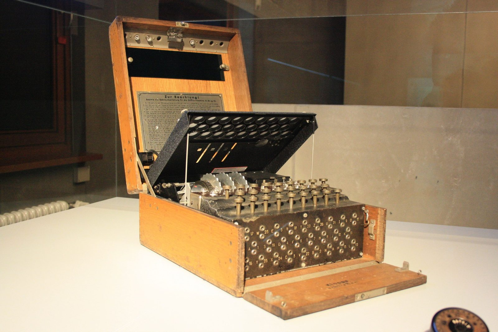
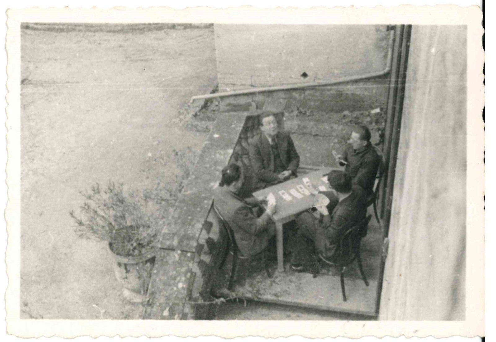
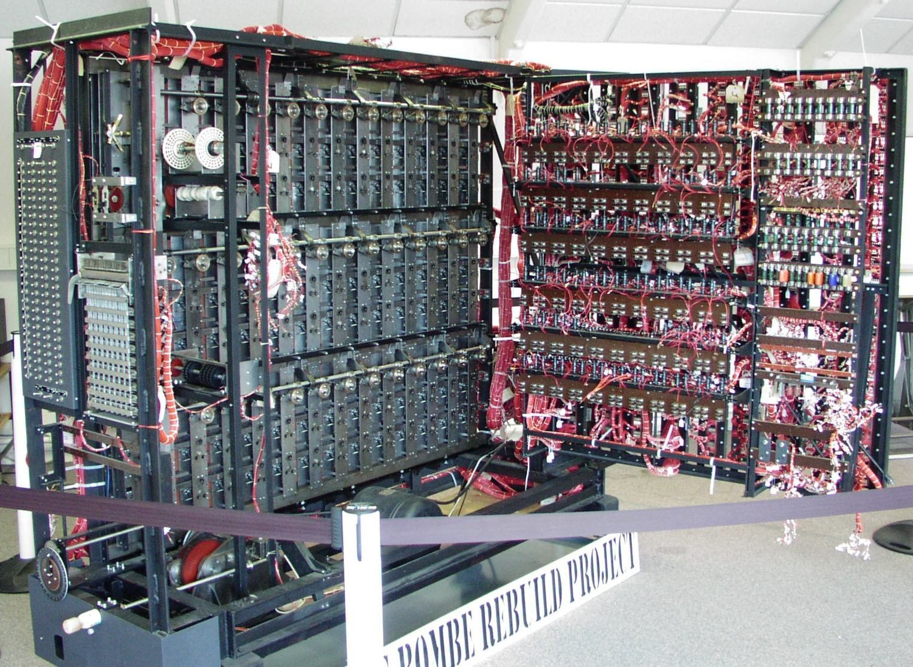
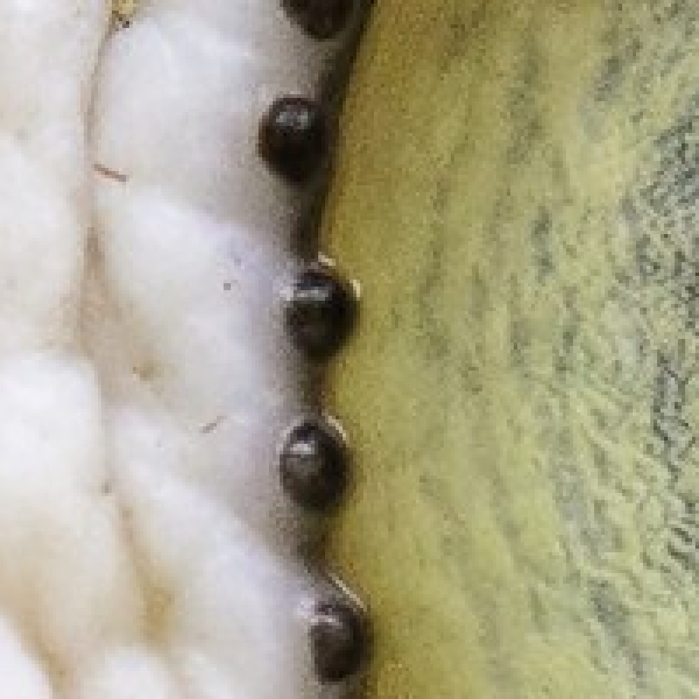

Unit 1 · Lesson 2
Enigma: everything becomes numbers
The Germans thought their machine was unbreakable. Who broke it first? And how does a machine read letters at all?
The story
Enigma looked like a typewriter. When you pressed a key, an electric current went through three wheels, called rotors, and a lamp lit up a different letter. After every key press a rotor turned, so the same letter was scrambled differently each time. The German army sent its secret orders this way, by radio.

.JPG){kind=link}
The Poles broke it first. In December 1932 a young mathematician, Marian Rejewski, worked out the wiring of the rotors with mathematics. With Jerzy Różycki and Henryk Zygalski he read German messages for years, and in 1938 they built a machine called the 'bomba'. In July 1939, weeks before the war, at Pyry near Warsaw, they gave everything to Britain and France. The film hardly mentions them.

_i_Jerzy_R%C3%B3%C5%BCycki_(po_lewej),_ok._1941_r.jpg){kind=link}
At Bletchley Park, Turing designed the British Bombe at the end of 1939. Gordon Welchman added the 'diagonal board', which made it much faster. The British Tabulating Machine Company built the Bombes in a factory, led by the engineer Harold 'Doc' Keen. About 211 were used in the war, run mostly by Wrens, women of the Royal Navy.


Enigma had a flaw: a letter never turned into itself. So if the codebreakers guessed a word in the message, called a crib (for example a weather report), they knew where it could not be. The Bombe tested thousands of settings very fast to find the one that fitted the crib.
The Germans also used another cipher machine, called Lorenz. To attack it, Tommy Flowers, a Post Office engineer, built Colossus, an electronic machine with valves. It was working at Bletchley Park in early 1944. Colossus attacked Lorenz, not Enigma. After the war most machines were taken apart, and the secret was kept for about thirty years.
The science
Letters become numbers
A computer only stores numbers, so we agree on a table that gives every letter a number. This table is called ASCII. A is 65, B is 66, C is 67, and so on. Small letters start at 97: a is 97. When you type HI, the computer stores 72 and 73.
Numbers become bits
Inside the machine every number is written with only two symbols, 0 and 1: this is binary. Each 0 or 1 is a bit, like a switch that is off or on. Eight bits make a byte. The eight places are worth 128, 64, 32, 16, 8, 4, 2, 1. To write 65, switch on 64 and 1: 01000001. With 8 bits you can write 256 different values, from 0 to 255.
A picture is a grid of numbers
Zoom into a photo and you see small squares: pixels. Each pixel is three numbers, one for red, one for green and one for blue (RGB), each from 0 to 255. 255, 0, 0 is bright red; 0, 0, 0 is black; 255, 255, 255 is white.

.jpg){kind=link}
Everything is counted in bytes
We measure data in bytes. Each unit is about a thousand times the one before. Remember one example for each: a byte (B) is one letter; a kilobyte (KB) is a paragraph; a megabyte (MB) is a phone photo; a gigabyte (GB) is an hour of video; a terabyte (TB) is a laptop's storage, the pantry of the computer.
- The cook = CPU core
- The metronome = clock (GHz)
- The countertop = cache
- The workbench = RAM
- The pantry = storage (SSD / HDD)
Check now
Quick questions. You see the answer at once.
In ASCII, the letter A is the number…
- 1
- 65
- 255
How many different values can you write with 8 bits?
Polish mathematicians broke Enigma before the British.
True or false?
About how many Bombes were used in the war?
- one
- about 20
- about 200
Try it
Click the bulbs to switch them on. Can you make 65, the letter A? Then make the letters of your initials.
Paper version
Eight bulbs, worth 128 64 32 16 8 4 2 1. To make 65, switch on 64 and 1: 0 1 0 0 0 0 0 1. More examples: 5 = 00000101 (4 + 1) · 10 = 00001010 (8 + 2) · 84, the letter T = 01010100 (64 + 16 + 4) · 255 = 11111111 (all on).
Type a word to see its ASCII numbers and its bits. Switch mode and type numbers to read them as text.
Paper version
ENIGMA in ASCII: E = 69 = 01000101 · N = 78 = 01001110 · I = 73 = 01001001 · G = 71 = 01000111 · M = 77 = 01001101 · A = 65 = 01000001. Capital letters start at A = 65; small letters start at a = 97.
Three real rotors (I, II, III) and a reflector. Type a message and watch the rotors turn. Can any letter light up as itself?
Paper version
Rotors I, II, III, start position AAA, reflector B, no plugboard. Type AAAAA: the lamps show BDZGO. Reset to AAA and type BDZGO: the lamps show AAAAA, so the same machine decodes. The same letter gives a different result each time, because a rotor turns at every key press. No letter ever lights up as itself: this was Enigma's flaw.
Your turn
Exercises
From ★☆☆ (easy) to ★★★ (hard). Use a hint if you are stuck.
-
Exercise 1 ★☆☆
What is the binary number 00000101 in decimal?
-
Exercise 2 ★☆☆
Which byte is the number 65, the letter A?
- 01000001
- 01000010
- 10000001
-
Exercise 3 ★★☆
What is 01010100 in decimal? (It is a letter in ASCII, too.)
-
Exercise 4 ★☆☆
Put the units in order, from the smallest to the largest.
- byte (B)
- gigabyte (GB)
- kilobyte (KB)
- megabyte (MB)
- terabyte (TB)
-
Exercise 5 ★★☆
Match each unit to an example of its size.
- byte (B) — ?
- kilobyte (KB) — ?
- megabyte (MB) — ?
- gigabyte (GB) — ?
- terabyte (TB) — ?
-
Exercise 6 ★☆☆
A pixel with the numbers 255, 255, 255 (red, green, blue) is white.
True or false?
-
Exercise 7 ★★☆
Tommy Flowers' Colossus attacked which German cipher?
- Enigma
- Lorenz
- the Caesar cipher
-
Exercise 8 ★★★
Your friend sends you the ASCII numbers 67 73 65 79. Decode them and explain how you did it.
In one sentence
Everything a computer holds is numbers: letters, pictures, secrets.
Words of the chapter
- rotor
- a wheel inside Enigma that changes the wiring at each key press rotore
- crib
- a word you guess is inside a secret message crib (parola probabile)
- ASCII
- the agreed table that gives every letter a number codice ASCII
- binary
- a way to write numbers with only 0 and 1 binario
- bit
- one switch: 0 or 1 bit
- byte
- eight bits; it can hold one letter byte
- pixel
- one square of a picture, stored as three numbers (RGB) pixel
- valve
- an early electronic switch, a glass tube valvola termoionica